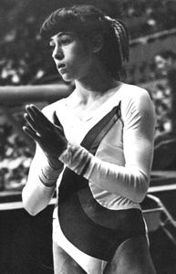

Galina Marinova (BUL)
1982 Champions All AA Gold
Medalist
1982 Cottbus Intl. AA Gold Medalist

Galina was born on September 1, 1964 and was coached by Liliana Stoyanova. A member of one Olympic and two World teams, she had her best year in 1982 when she won both the Champions All and Cottbus International tournaments.
Galina moved to the US in 1990. She's now the director and head coach at All Olympia Gymnastics Center in Los Angeles.
Competition Results
1978
FRG-BUL Dual Meet: 1st Team, 10th AA
Golden Sands International: 12th AA
SUI-BUL Dual Meet: 1st Team, 6th AA
1979
Antibes International: 6th B
Golden Sands International: 6th AA
Spartakiad: 7th AA
World Championships: 8th Team, 33rd AA
1980
Balkan Championships: 2nd Team, 5th AA, 1st FX
FRA-BUL Dual Meet: 1st Team, 3rd AA
Golden Sands International: 1st AA, 1st FX, 2nd V
International Championships of Romania: 14th AA, 4th FX, 8th B
Olympic Games: 6th Team, 21st AA
1981
Balkan Championships: 2nd Team, 3rd AA, 2nd UB, 2nd FX, 4th V
European Championships: 15th AA, 7th V, 7th FX
Golden Sands International: 1st AA, 1st V, 1st UB, 2nd B
World Championships: 7th Team, 18th AA, 8th FX
1982
Balkan Championships: 2nd Team, 6th AA, 4th V, 4th FX
Champions All: 1st AA
Cottbus International: 1st AA, 1st V, 1st FX, 2nd B
Golden Sands International: 1st AA, 1st V, 1st UB
Tokyo Cup: 2nd V
World Cup: 13th AA
1983
BUL-HOL Dual Meet: 1st Team, 1st AA
European Championships: 10th AA, 6th UB
GBR-BUL Dual Meet: 1st Team, 1st AA
Pre-Olympics: 17th AA
This page was created on December
26, 2004 and was last updated on May 11, 2026.
© Gymn Forum